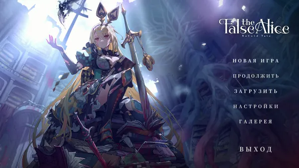
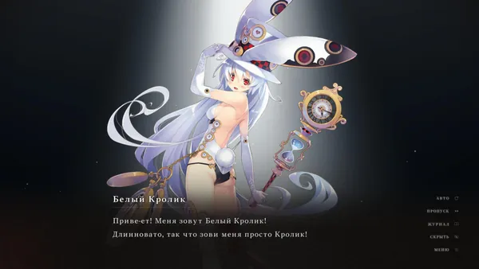
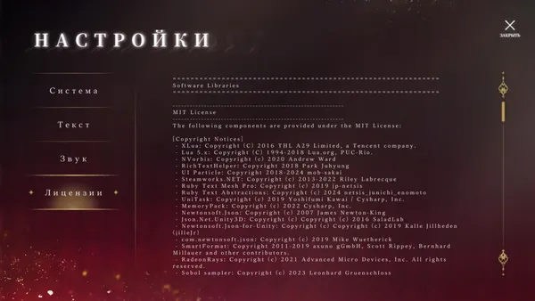

Русификатор полной версии The False Alice -Retold Tale-
Мрачная сказочная визуальная новелла от VISUAL ARTS. Учитель, потерявший память, просыпается среди Неудачных творений и встречает трёх Ложных Алис: чтобы стать настоящей, каждой из них придётся убить остальных. Переведён весь сюжет — 5 глав, около 20 250 строк, — интерфейс и надписи в меню. Версия 1.0.
через лаунчер · перевод 1.0 от 27.11.2026 · отдельный патчерКак выглядит перевод






Что переведено
Скачать
Проще всего — через лаунчер: распакуйте архив, запустите Perevedeno.exe, выберите The False Alice (полная версия) и нажмите «Установить». Затем в игре выберите язык English: перевод заменяет английскую локализацию.
Отдельный патчер (если лаунчер не запускается): закройте игру, распакуйте архив и запустите «False Alice RU Patcher.bat» — он сам найдёт игру в Steam и поставит перевод.
Нужна игра из Steam: файлов игры в патчере нет. Один из файлов игры весит около 3 ГБ, поэтому установка занимает несколько минут, а на диске нужно около 7 ГБ свободного места.
Как в оригинале остаются логотип игры, японские надписи в заставке и титры в концовке.
Вопросы
После обновления игра снова на английском
Steam перезаписал файлы. Если лаунчер или патчер не может поставить перевод на новую версию игры — дождитесь обновления русификатора, сообщим в Telegram; лаунчер предложит обновиться сам.
Windows предупреждает при запуске
Это стандартное предупреждение для скачанных скриптов. Нажмите «Запустить» (или «Подробнее» → «Выполнить в любом случае»). Код патчера открыт — он лежит в файле patcher\Patcher.cs.
Как вернуть английский?
В лаунчере или патчере — кнопка «Вернуть английский», она восстановит все файлы. Или Steam → Свойства → Установленные файлы → Проверить целостность файлов. Если игра обновится в Steam и перевод слетит — дождитесь новой версии, сообщим в Telegram.
Подойдёт ли патч демо к полной версии?
Нет. У полной игры другая папка с данными (ItsualiRetold_Data вместо ItsualiRetoldTrial_Data у демо) и другие файлы, поэтому патч демо её не найдёт и ничего не изменит. Для полной версии — патчер с этой страницы, для демо — свой перевод на странице демо.
А демо?
Демо переведено полностью — страница демо. Глава 1 полной версии продолжает демо, а начало демо мы перенесли в полную версию с правками.
Нашёл опечатку или английскую строку
Пришлите скриншот в Telegram — поправим в следующей версии перевода.